Diagrams
All of us engage in and make use of valid reasoning, but the reasoning we actually perform differs in various ways from the inferences studied by most (formal) logicians. Reasoning as performed by human beings typically involves information obtained through more than one medium. Formal logic, by contrast, has thus far been primarily concerned with valid reasoning which is based on information in one form only, i.e., in the form of sentences. Recently, many philosophers, psychologists, logicians, mathematicians, and computer scientists have become increasingly aware of the importance of multi-modal reasoning and, moreover, much research has been undertaken in the area of non-symbolic, especially diagrammatic, representation systems.[1] This entry outlines the overall directions of this new research area and focuses on the logical status of diagrams in proofs, their representational function and adequacy, different kinds of diagrammatic systems, and the role of diagrams in human cognition.
- 1. Introduction
- 2. Diagrams as Representational Systems
- 3. Consequences of Spatial Properties of Diagrams
- 4. Diagrammatic Systems in Geometry
- 5. Diagrams and Cognition, Applications
- Summary
- Bibliography
- Academic Tools
- Other Internet Resources
- Related Entries
1. Introduction
Diagrams or pictures probably rank among the oldest forms of human communication. They are not only used for representation but can also be used to carry out certain types of reasoning, and hence play a particular role in logic and mathematics. However, sentential representation systems (e.g., first-order logic) have been dominant in the modern history of logic, while diagrams have largely been seen as only of marginal interest. Diagrams are usually adopted as a heuristic tool in exploring a proof, but not as part of a proof.[2] It is a quite recent movement among philosophers, logicians, cognitive scientists and computer scientists to focus on different types of representation systems, and much research has been focussed on diagrammatic representation systems in particular.
Challenging a long-standing prejudice against diagrammatic representation, those working on multi-modal reasoning have taken different kinds of approaches which we may categorize into three distinct groups. One branch of research can be found in philosophy of mind and cognitive science. Since the limits of linguistic forms are clear to those who have been working on mental representation and reasoning, some philosophers and cognitive scientists have embraced this new direction of multi-modal reasoning with enthusiasm and have explored human reasoning and mental representation involving non-linguistic forms (Cummins 1996; Chandrasekaran et al. 1995). Another strand of work on diagrammatic reasoning shows that there is no intrinsic difference between symbolic and diagrammatic systems as far as their logical status goes. Some logicians have presented case studies to prove that diagrammatic systems can be sound and complete in the same sense as symbolic systems. This type of result directly refuted a widely-held assumption that diagrams are inherently misleading, and abolished theoretical objections to diagrams being used in proofs (Shin 1994; Hammer 1995a). A third direction in multi-modal reasoning has been taken by computer scientists, whose interest is much more practical than those of the other groups. Not so surprisingly, those working in many areas in computer science—for example, knowledge representation, systems design, visual programming, GUI design, and so on—found new and exciting opportunities in this new concept of ‘heterogeneous system’ and have implemented diagrammatic representations in their research areas.
We have the following goals for this entry. First of all, we would like to acquaint the reader with the details of some specific diagrammatic systems. At the same time, the entry will address theoretical issues, by exploring the nature of diagrammatic representation and reasoning in terms of expressive power and correctness. The case study of the second section will not only satisfy our first goal but also provide us with solid material for the more theoretical and general discussion in the third section. The fourth section presents another case study and considers it in light of the third section’s general discussion. As mentioned above, the topic of diagrams has attracted much attention with important results from many different research areas. Hence, our fifth section aims to introduce various approaches to diagrammatic reasoning taken in different areas.
For further discussion, we need to clarify two related but distinct uses of the word ‘diagram’: diagram as internal mental representation and diagram as external representation. The following quotation from Chandrasekaran et al. (1995: p. xvii) succinctly sums up the distinction between internal versus external diagrammatic representations:
- External diagrammatic representations: These are constructed by the agent in a medium in the external world (paper, etc), but are meant as representations by the agent.
- Internal diagrams or images: These comprise the (controversial) internal representations that are posited to have some pictorial properties.
As we will see below, logicians focus on external diagrammatic systems, the imagery debate among philosophers of mind and cognitive scientists is mainly about internal diagrams, and research on the cognitive role of diagrams touches on both forms.
2. Diagrams as Representational Systems
The dominance of sentential representation systems in the history of modern logic has obscured several important facts about diagrammatic systems. One of them is that several well-known diagrammatic systems were available as a heuristic tool before the era of modern logic. Euler circles, Venn diagrams, and Lewis Carroll’s squares have been widely used for certain types of syllogistic reasoning (Euler 1768; Venn 1881; Carroll 1896). Another interesting, but neglected, story is that a founder of modern symbolic logic, Charles Peirce, not only revised Venn diagrams but also invented a graphical system, Existential Graphs, which has been proven to be equivalent to a predicate language (Peirce 1933; Roberts 1973; Zeman 1964).
These existing diagrams have inspired those researchers who have recently drawn our attention to multi-modal representation. Logicians who participate in the project have explored the subject in two distinct ways. First, their interest has focused exclusively on externally-drawn representation systems, as opposed to internal mental representations. Second, their aim has been to establish the logical status of a system, rather than to explain its heuristic power, by testing the correctness and the expressive power of selective representation systems. If a system fails to justify its soundness or if its expressive power is too limited, a logician’s interest in that language will fade (Sowa 1984; Shin 1994).
In this section, we examine the historical development of Euler and Venn diagrams as a case study to illustrate the following aspects: First, this process will show us how one mathematician’s simple intuition about diagramming syllogistic reasoning has gradually been developed into a formal representation system. Second, we will observe different emphases given to different stages of extension and modification of a diagrammatic system. Thirdly and relatedly, this historical development illustrates an interesting tension and trade-off between the expressive power and visual clarity of diagrammatic systems. Most importantly, the reader will witness logicians tackle the issue of whether there is any intrinsic reason that sentential systems, but not diagrammatic systems, could provide us with rigorous proofs, and their success in answering this question in the negative.
Hence, the reader will not be surprised by the following conclusion drawn by Barwise and Etchemendy, the first logicians to launch an inquiry into diagrammatic proofs in logic,
there is no principled distinction between inference formalisms that use text and those that use diagrams. One can have rigorous, logically sound (and complete) formal systems based on diagrams. (Barwise & Etchemendy 1995: 214)
This conviction was necessary for the birth of their innovative computer program Hyperproof, which adopts both first-order languages and diagrams (in a multi-modal system) to teach elementary logic courses (Barwise & Etchemendy 1993 and Barwise & Etchemendy 1994).
2.1 Euler Diagrams
Leonhard Euler, an 18th century mathematician, adopted closed curves to illustrate syllogistic reasoning (Euler 1768). The four kinds of categorical sentences are represented by him as shown in Figure 1.
![Four cases: the first labeled 'All A are B' has an inner circle labeled 'A' completely inside an outer circle labeled 'B'; the second labeled 'No A is B' has two non-overlapping circles, one labeled 'A' and the other 'B'; the third labeled 'Some A is B' has two overlapping circles, the overlap is labeled 'A' and the non-overlap bit of one circle is labeled 'B'; the fourth case labeled 'Some A is not B' has two overlapping circles, the non-overlap bit of one is labeled 'A' and the non-overlap bit of the other is labeled 'B'](fig1.png)
Figure 1: Euler Diagrams
For the two universal statements, the system adopts spatial relations among circles in an intuitive way: If the circle labelled ‘A’ is included in the circle labelled ‘B,’ then the diagram represents the information that all A is B. If there is no overlapping part between two circles, then the diagram conveys the information that no A is B.
This representation is governed by the following convention:[3]
Every object x in the domain is assigned a unique location, say l(x), in the plane such that l(x) is in region R if and only if x is a member of the set that the region R represents.
The power of this representation lies in the fact that an object being a member of a set is easily conceptualized as the object falling inside the set, just as locations on the page are thought of as falling inside or outside drawn circles. The system’s power also lies in the fact that no additional conventions are needed to establish the meanings of diagrams involving more than one circle: relationships holding among sets are asserted by means of the same relationships holding among the circles representing them. The representations of the two universal statements, ‘All Aare B’ and ‘No A is B,’ illustrate this strength of the system.
Moving on to two existential statements, this clarity is not preserved. Euler justifies the diagram of “Some A is B” saying that we can infer visually that something in A is also contained in B since part of area A is contained in area B (Euler 1768: 233). Obviously, Euler himself believed that the same kind of visual containment relation among areas can be used in this case as well as in the case of universal statements. However, Euler’s belief is not correct and this representation raises a damaging ambiguity. In this diagram, not only is part of circle A contained in area B (as Euler describes), but the following are true: (i) part of circle B is contained in area A (ii) part of circle A is not contained in circle B (iii) part of circle B is not contained in circle A. That is, the third diagram could be read off as “Some B is A,” “Some A is not B,” and “Some B is not A” as well as “Some A is B.” In order to avoid this ambiguity, we need to set up several more conventions.[4]
Euler’s own examples nicely illustrate the strengths and weaknesses of his diagrammatic system.
Example 1. All A are B. All C are A. Therefore, all C are B.
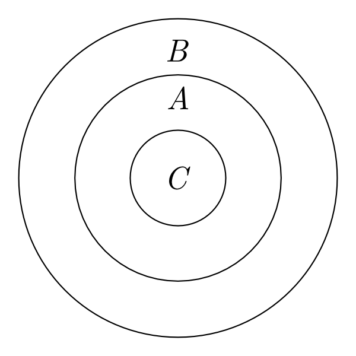Example 2. No A is B. All C are B. Therefore, no C is A.
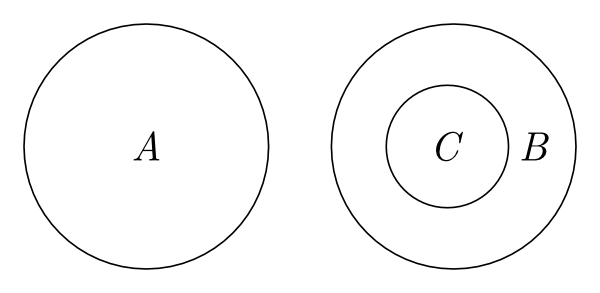
In both examples, the reader can easily infer the conclusion, and this illustrates visually powerful features of Euler diagrams. However, when existential statements are represented, things become more complicated, as explained above. For instance:
Example 3. No A is B. Some C is A. Therefore, Some C is not B.
No single diagram can represent the two premises, since the relationship between sets B and C cannot be fully specified in one single diagram. Instead, Euler suggests the following three possible cases:
![Three cases: Case 1 has on the left two overlapping circles, the overlap is labeled 'C' and the non-overlap section of first circle is labeled 'A'; on the right and separate is a third circle labeled 'B'. Case 2 has three circles, two of the circles overlap and the overlap section is labeled 'C' and the non-overlap section of the first circle is labeled 'A'; in the non-overlap section of the second circle is the third circle labeled 'B'. Case 3 is similar to Case 2 except the third circle is not completely within the non-overlap section of the second circle; the section of the third circle outside the second circle is labeled 'B'](example3.png)
Euler claims that the proposition ‘Some C is not B’ can be read off from all these diagrams. However, it is far from being visually clear how the first two cases lead a user to reading off this proposition, since a user might read off “No C is B” from case 1 and “All B is C” from case 2.
Hence, the representation of existential statements not only obscures the visual clarity of Euler Circles but also raises serious interpretational problems for the system. Euler himself seemed to recognize this potential problem and introduced a new syntactic device, ‘*’ (representing non-emptiness) as an attempt to repair this flaw (1768: Letter 105).
However, a more serious drawback is found when this system fails to represent certain compatible (that is, consistent) pieces of information in a single diagram. For example, Euler’s system prevents us from drawing a single diagram representing the following pairs of statements: (i) “All A are B” and “No A is B” (which are consistent if A is an empty set). (ii) “All A are B” and “All B are A” (which are consistent when A = B). (iii) “Some A is B” and “All A are B”. (Suppose we drew an Euler diagram for the former proposition and try to add a new compatible piece of information, i.e., the latter, to this existing diagram.) This shortcoming is closely related to Venn’s motivation for his own diagrammatic system (see Section 3.1 for other shortcomings of Euler’s system).
2.2 Venn Diagrams
Venn’s criticism of Euler Circles is summarized in the following passage:
The weak point in this [Euler diagrams], and in all similar schemes, consists in the fact that they only illustrate in strictness the actual relation of classes to each other, rather than the imperfect knowledge of these relations which we may possess, or may wish to convey by means of the proposition. (Venn 1881: 510)
Because of its strictness, Euler’s system sometimes fails in representing consistent pieces of information in a single diagram, as shown above. In addition to this expressive limitation, Euler’s system also suffers other kinds of expressive limitations with respect to non-empty sets, due to topological restrictions on plane figures (see Section 3.1).
Venn’s new system (1881) was to overcome these expressive limitations so that partial information can be represented. The solution was his idea of ‘primary diagrams’. A primary diagram represents all the possible set-theoretic relations between a number of sets, without making any existential commitments about them. For example, Figure 2 shows the primary diagram about sets A and B.
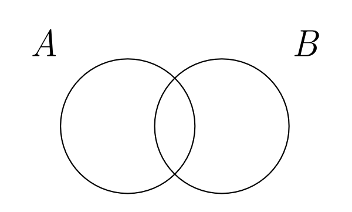
Figure 2: Venn’s Primary diagrams
According to Venn’s system, this diagram does not convey any specific information about the relation between these two sets. This is the major difference between Euler and Venn diagrams.
For the representation of universal statements, unlike the visually clear spatial containment relations in the case of Euler diagrams, Venn’s solution is ‘to shade them [the appropriate areas] out’ (Venn 1881: 122). By using this syntactic device, we obtain diagrams for universal statements as shown in Figure 3.
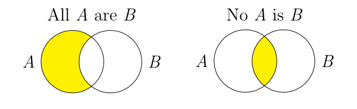
Figure 3: Venn’s shading
Venn’s choice of shading might not be absolutely arbitrary in that a shading could be interpreted as a visualization of set emptiness. However, it should be noted that a shading is a new syntactic device which Euler did not use. This revision gave flexibility to the system so that certain compatible pieces of information may be represented in a single diagram. In the following, the diagram on the left combines two pieces of information, “All A are B” and “No A is B,” to visually convey the information “Nothing is A.” The diagram on the right, which represents both “All A are B” and “All B are A,” clearly shows that A is the same as B:
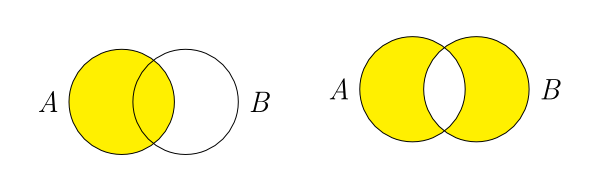
In fact, using primary diagrams also avoids some other expressivity problems (to do with spatial properties of diagram objects) discussed below, in Section 3. Surprisingly, Venn was silent about the representation of existential statements, which was another difficulty of Euler diagrams. We can only imagine that Venn might have introduced another kind of a syntactic object representing existential commitment. This is what Charles Peirce did about twenty years later.
2.3 Peirce’s extension
Peirce points out that Venn’s system has no way of representing the following kinds of information: existential statements, disjunctive information, probabilities, and relations. Peirce aimed to extend Venn’s system in expressive power with respect to the first two kinds of propositions, i.e., existential and disjunctive statements. This extension was completed by means of the following three devices. (i) Replace Venn’s shading representing emptiness with a new symbol, ‘o’. (ii) Introduce a symbol ‘x’ for existential import. (iii) For disjunctive information, introduce a linear symbol ‘-’ which connects ‘o’ and ‘x’ symbols.
For example, Figure 4 represents the statement, ‘All A are B or some A is B’, which neither Euler’s nor Venn’s system can represent in a single diagram.
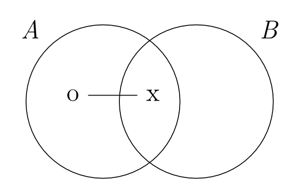
Figure 4: A Peirce diagram
The reason that Peirce replaced Venn’s shading for emptiness with the symbol ‘o’ seems to be obvious: It would not be easy to connect shadings or shadings and ‘x’s in order to represent disjunctive information. In this way, Peirce increased the expressive power of the system, but this change was not without its costs.
For example, the following diagram represents the proposition ‘Either all A are B and some A is B, or no A is B and some B is not A’:
![two overlapping circles labeled 'A' and 'B'; first, inside the non-overlapping section of circle A is an 'o' connected by a line to an 'o' inside the overlap; second, also in the non-overlapping section of circle A is another 'o' connected by a line to an 'x' in the non-overlapping section of circle 'B'; third in the overlapping section of the two circles are an 'x and an 'o' connected by a line; fourth an 'x' in the overlapping section connected by a line to an 'x' in the non-overlapping section of circle B.](fig4b.png)
Reading off this diagram requires more than reading off visual containment among circles (as in Euler diagrams) or shadings (as in Venn diagrams), but also requires extra conventions for reading combinations of the symbols ‘o,’ ‘x,’ and lines. Peirce’s new conventions increased the expressive power of single diagrams, but the arbitrariness of its conventions and more confusing representations (for example, the above diagram) sacrificed the visual clarity which Euler’s original system enjoys. At this point, Peirce himself confesses that ‘there is a great complexity in the expression that is essential to the meaning’ (Peirce 1933: 4.365). Thus, when Peirce’s revision was completed, most of Euler’s original ideas about visualization were lost, except that a geometrical object (the circle) is used to represent (possibly empty) sets.
Another important contribution Peirce made to the study of diagrams starts with the following remark:
‘Rule’ is here used in the sense in which we speak of the ‘rules’ of algebra; that is, as a permission under strictly defined conditions. (Peirce 1933: 4.361)
Peirce was probably the first person to discuss rules of transformation in a non-sentential representation system. In the same way that the rules of algebra tell us which transformations of symbols are permitted and which are not, so should the rules of diagram manipulation. Some of Pierce’s six rules needed more clarification and turn out to be incomplete—a problem which Peirce himself anticipated. However, more importantly, Peirce did not have any theoretical tool—a clear distinction between syntax and semantics—to convince the reader that each rule is correct or to determine whether more rules are needed. That is, his important intuition (that there could be transformation rules for diagrams) remained to be justified.
2.4 Diagrams as formal systems
Shin (1994) follows up Peirce’s work in two directions. One is to improve Peirce’s version of Venn diagrams, and the other is to prove the soundness and the completeness of this revised system.
Shin’s work alters Peirce’s modifications of Venn diagrams to achieve an increase in expressive power without such a severe loss of visual clarity. This revision is made in two stages: (i) Venn-I: retains Venn’s shadings (for emptiness), Peirce’s ‘x’ (for existential import) and Peirce’s connecting line between ‘x’s (for disjunctive information). (ii) Venn-II: This system, which is proven to be logically equivalent to monadic predicate logic, is the same as Venn-I except that a connecting line between diagrams is newly introduced to display disjunctive information.
Returning to one of Euler’s examples we will see the contrast among these different versions clearly:
Example 3. No A is B. Some C is A. Therefore, Some C is not B.
Euler admits that no single Euler diagram can be drawn to represent the premises, but that three possible cases must be drawn. Venn’s system is silent about existential statements. Now, Peirce’s and Shin’s systems represent these two premises in a single diagram as follows:
![Two diagrams both consisting of three overlapping circles labeled 'A', 'B', and 'C'. The first diagram, titled 'Peirce', has in the overlap of all three circles an 'x' connected to an 'x' in the overlap of only circles A and C; it also has in the overlap of all three circles an 'o' and also an 'o' in the overlap of only circles A and B. The second diagram, titled 'Shin', has in the overlap of all three circles an 'x' connected to an 'x' in the overlap of only circles A and C; the overlap of A and B is shaded.](example3b.png)
In the case of Shin’s diagram, Venn’s shading convention for emptiness, as opposed to Peirce’s ‘o’, much more naturally leads the reader to the inference “Some C is not B” than in the case of Peirce’s diagram.
However, Venn-I cannot express disjunctive information between universal statements or between universal and existential statements. Retaining Venn-I’s expressive power, Venn-II allows diagrams to be connected by a line. Peirce’s confusing looking diagram above is equivalent to the following Venn-II diagram:
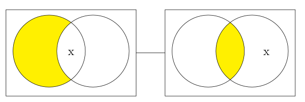
In addition to this revision, Shin (1994) presented each of these two systems as a standard formal representation system equipped with its own syntax and semantics. The syntax tells us which diagrams are acceptable, that is, which are well-formed, and which manipulations are permissible in each system. The semantics defines logical consequences among diagrams. Using these tools, it is proven that the systems are sound and complete, in the same sense that some symbolic logics are.
This approach has posed a fundamental challenge to some of the assumptions held about representation systems. Since the development of modern logic, important concepts, e.g., syntax, semantics, inference, logical consequence, validity, and completeness, have been applied to sentential representation systems only. However, none of these turned out to be intrinsic to these traditional symbolic logics only. For any representation system, whether it is sentential or diagrammatic, we can discuss two levels, a syntactic and a semantic level. What inference rules tell us is how to manipulate a given unit, whether symbolic or diagrammatic, to another. The definition of logical consequence is also free from any specific form of a representation system. The same argument goes for the soundness and the completeness proofs. When a system is proven to be sound, we should be able to adopt it in proofs. In fact, much current research explores the use of diagrams in automated theorem proving (see Barker-Plummer & Bailin 1997; and Jamnik et al. 1999).
2.5 Euler Circles revisited
It is interesting and important to notice that the gradual changes made from Euler Circles through to Shin’s systems share one common theme: to increase both the expressive and logical power of the system so that it is sound, complete, and logically equivalent to monadic predicate logic. The main revision from Euler to Venn diagrams, introducing primary diagrams, allows us to represent partial knowledge about relations between sets. The extension from Venn to Peirce diagrams is made so that existential and disjunctive information may be represented more effectively.
Both Venn and Peirce adopted the same kind of solution in order to achieve these improvements: to introduce new syntactic objects, that is, shadings by Venn, and ‘x’s, ‘o’s, and lines by Peirce. However, on the negative side, these revised systems suffer from a loss of visual clarity, as seen above, mainly because of the introduction of more arbitrary conventions. The modifications from Peirce to Shin diagrams concentrate on restoring visual clarity, but without loss of expressive power.
Hammer and Shin take a different path from these revisions: To revive Euler’s homomorphic relation between circles and sets—containment among circles represents the subset relation among sets, and non-overlapping of regions represents the disjoint relation—and at the same time, to adopt Venn’s primary diagrams by default. On the other hand, this revised Euler system is not a self-sufficient tool for syllogistic reasoning, since it cannot represent existential statements. For more details of this revised system, refer to (Hammer & Shin 1998).
This case study raises an interesting question for further research on diagrammatic reasoning. Throughout the different developments of Euler diagrams, increasing its expressive power and enhancing its visual clarity seem to be complementary to each other. Depending on purposes, we need to give priority to one over the other. Hammer and Shin’s alternative system provides a simple model for the development of other efficient non-sentential representational systems, a topic that has been receiving increasing attention in computer science and cognitive science.
3. Consequences of Spatial Properties of Diagrams
While it is often possible to afford diagrams the same logical status as formulae (as argued above), there are still important differences (which can have ramifications for correctness of the system) between diagrams and traditional linear proof calculi. An important point to note about diagrams (cf. Russell 1923) is that spatial relations between objects in a diagram can be used to represent relations between objects in some other domain. Sequential languages (e.g., symbolic logics, natural languages), however, use only the relation of concatenation to represent relations between objects. The peculiar representational use of spatial relations in the case of diagrams is direct and intuitive, as seen in the development of Euler Diagrams above, but also has its perils—as we shall discuss. Spatial constraints, being peculiar to diagrammatic systems, can be expected to be an important source of both their strengths and weaknesses. Psychological considerations concerning human capacities for visual processing of information, and skill at qualitative spatial reasoning, also have ramifications for the effectiveness of reasoning with diagrams, but we shall not survey them here.
A particular distinguishing feature of diagrams is that they obey certain “nomic” or “intrinsic” constraints due to their use of plane surfaces as a medium of representation. The idea is that sentential languages are based on acoustic signals which are sequential in nature, and so must have a compensatingly complex syntax in order to express certain relationships—whereas diagrams, being two-dimensional, are able to display some relationships without the intervention of a complex syntax (Stenning & Lemon 2001). Diagrams exploit this possibility—the use of spatial relations to represent other relations. The question is; how well can spatial relations and objects represent other (possibly more abstract) objects and relations?
Logical reasoning with diagrams is often carried out in virtue of their depiction of all possible models of a situation, up to topological equivalence of the diagrams (this, of course, depends on the particular diagrammatic system in use). A single diagram is often an abstraction over a class of situations, and once a suitable diagram has been constructed, inferences can simply be read off the representation without any further manipulation. In some diagrammatic systems (e.g., Euler Circles) inference is carried out by constructing diagrams correctly and reading information off them. The complexity of using inference rules in a symbolic logic is, in these cases, replaced by the problem of drawing particular diagrams correctly.[5] For instance, an Euler Circles diagram ventures to capture relationships between sets using topological relationships between plane regions in such a way that that it depicts all the possible ways that a certain collection of set-theoretic statements could be true. This has two important consequences: (1) if a certain diagram cannot be drawn then the described situation must be impossible (termed “self-consistency”), and (2) if a certain relationship between diagram objects must be drawn, then the corresponding relation can be inferred as logically valid. (See the numerous examples in Section 2.) This phenomenon is often termed a “free-ride” (Barwise & Shimojima 1995). This style of diagrammatic reasoning is thus dependent on a particular representational use of diagrams—that they represent classes of models. If a particular class of models cannot be represented by a diagrammatic system, then those cases will not be taken into account in inferences using the system, and incorrect inferences might be drawn. This fact makes the representational adequacy of diagrammatic systems, restricted by their spatial nature, of paramount importance, as we shall now explore.
3.1 Limitations on diagrammatic representation and reasoning
The representational use of the spatial relations in the plane constrains diagrammatic representation, and therefore reasoning with diagrams, in certain important ways. In particular, there are topological and geometrical (let us lump them together as “spatial”) properties of diagrammatic objects and relations which limit the expressive power of diagrammatic systems. For instance, in graph theory it is known that some simple structures cannot be drawn in the plane. For example, the graph K5 is the graph consisting of 5 nodes, each joined to the other by an arc. This graph is non-planar, meaning that it cannot be drawn without at least two of the arcs crossing. This is just the sort of constraint on possible diagrams that limits the expressive power of diagrammatic systems. Now, since diagrammatic reasoning can occur by enumeration of all possible models of a situation, this representational inadequacy (a type of incompleteness) renders many diagrammatic systems incorrect if they are used for logical reasoning (e.g., see the critique of Englebretsen 1992 in Lemon & Pratt 1998).
Perhaps the most simple example of this is due to Lemon and Pratt[6] (see e.g., 1997). Consider Euler Circles—where convex regions of the plane represent sets, and overlap of the regions represents non-empty intersection of the corresponding sets. A result of convex topology known as Helly’s Theorem states (for the 2 dimensional case) that if every triple of 4 convex regions has a non-empty intersection then all four regions must have a non-empty intersection.
To understand the ramifications of this, consider the following problem:
Example 4. Using Euler Circles, represent the following premises:
- A ∩ B ∩ C ≠ ∅
- B ∩ C ∩ D ≠ ∅
- C ∩ D ∩ A ≠ ∅
Note that, in terms of set-theory, only trivial consequences follow from these premises. However, an Euler diagram of the premises, such as Figure 5, leads to the incorrect conclusion that A ∩ B ∩ C ∩ D ≠ ∅ (due to the quadruple overlap region in the centre of the diagram):
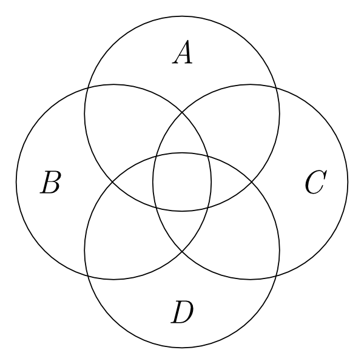
Figure 5: An Euler’s Circles representation exhibiting Helly’s Theorem
In other words, a user of Euler Circles is forced[7] to represent a relationship between the sets which is not logically necessary. This means both that there are logically possible situations which the system cannot represent, and that a user would make incorrect inferences if they relied on the system for reasoning. More generally, this type of result can be generated for many different types of diagrammatic system, depending on the particular spatial relations and objects which they use in representation—a research programme which is ongoing.
For example, using non-convex regions (e.g., “blobs” instead of circles) leads to a similar problem, only that non-planar graphs are involved instead of Helly’s Theorem. A similar result concerns linear diagrams for syllogisms Englebretsen 1992, where lines are used to represent sets, points represent individuals, point-line intersection represents set-membership, and intersection of lines represents set-intersection. Again, planarity constraints restrict the expressive power of the system and lead to incorrect inferences.
Atsushi Shimojima’s “constraint hypothesis” perhaps best sums all this up:
Representations are objects in the world, and as such they obey certain structural constraints that govern their possible formation. The variance in inferential potential of different modes of representation is largely attributable to different ways in which these structural constraints on representations match with the constraints on targets of representation (Shimojima 1996a, 1999).
3.2 Efficacy of diagrams
As discussed above, much of the interest in diagrams has been generated by the claim that they are somehow more “effective” than traditional logical representations for certain types of task. Certainly, for example, a map is a greater aid to navigation than a verbal description of a landscape. However, while there are certainly psychological advantages to be gained through the use of diagrams, they are (as in the case of Euler Circles) often ineffective as representations of abstract objects and relationships. Once a purely intuitive notion, non-psychological claims about “efficacy” of diagrammatic systems can be examined in terms of standard formal properties of languages (Lemon et al. 1999). In particular, many diagrammatic systems are self-consistent, incorrect, and incomplete, and complexity of inference with the diagrams is NP-hard. By way of contrast, most sentential logics, while able to express inconsistencies, are complete and correct[8] .
On the other hand, not being able to represent contradictions could provide us with interesting insights about the nature of diagrammatic representation. If a central goal of a language is to represent the world or a state of affairs, then representing contradictions or tautologies is called into question. Neither contradictions nor tautologies are part of the world. How can we draw a picture, or take a picture, of the contradiction that “it is raining and it is not raining”? How about the picture of the disjunctive information “it is either raining or not raining”? Now, we seem to be much closer to Wittgenstein’s classic picture theory of language (Wittgenstein 1921).
4. Diagrammatic Systems in Geometry
Mathematicians have used, and continue to use, diagrams extensively. The communication of mathematical concepts and proofs—in textbooks, on blackboards—is not uniformly sentential. Figures and pictures are common. In line with the prevailing conception of logic as essentially sentential, however, they are not usually thought to play a role in rigorous mathematical reasoning. Their use is taken to be limited to enhancing comprehension of a proof. They are not standardly believed to form any part of the proof itself.
The attitude is well illustrated by the standard assessment of Euclid’s methodology in the Elements. In no mathematical subject are diagrams more prominent than in the elementary geometry Euclid develops in the text. The proofs of the subject seem to be in some sense about the diagrams of triangles and circles that appear with them. This is especially the case with the geometric proofs of the Elements. Diagrams for Euclid are not merely illustrative. Some of his inference steps depend on an appropriately constructed diagram. On the standard story, these steps indicate gaps in Euclid’s proofs. They show how Euclid did not fully carry out the project of developing geometry axiomatically.
Ken Manders set out to explode this story with his seminal work “The Euclidean diagram” (2008 [1995]). His analysis of Euclid’s diagrammatic proof method reveals that Euclid employs diagrams in a controlled, systematic way. It thus calls into question the common, negative assessment of the rigor of the Elements. Moreover, the specifics of Manders’ analysis suggest that the proofs of the text can be understood to adhere to a formal diagrammatic logic. This was subsequently confirmed by the development of formal diagrammatic systems designed to characterize such a logic. The first of these was FG (presented in Miller 2007), followed by the system Eu (Mumma 2010).
This section is devoted to explicating Manders’ analysis and the formal systems that have emerged from it. After a brief survey of how Euclid’s diagrams have been viewed through the centuries, Manders’ picture of their role in geometric proofs is presented. A description of how the systems FG and Eu render this picture in formal terms and characterize a logic of Euclidean diagrams then follows.
4.1 Views on Euclid’s diagrams from 4th century BCE to the 20th century CE
The elementary geometry of the Elements was taken to be foundational to mathematics from its inception in ancient Greece until the 19th century. Accordingly, philosophers concerned with the nature of mathematics found themselves obliged to comment on the diagrammatic proofs of the text. A central issue, if not the central issue, was the generality problem. The diagram that appears with a Euclidean proof provides a single instantiation of the type of geometric configurations the proof is about. Yet properties seen to hold in the diagram are taken to hold of all the configurations of the given type. What justifies this jump from the particular to the general?
As an illustration, consider the proof for proposition 16 of book I of the Elements.
The proposition is:
In any triangle, if one of the sides be produced, the exterior angle is greater than either of the interior and opposite angles.
Euclid’s proof is:
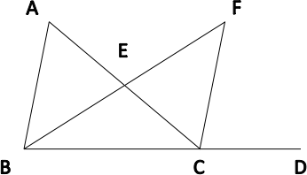
- Let ABC be a triangle, and let one side of it BC be produced to D;
- I say that the angle ACD is greater than the interior and opposite angle BAC.
- Let AC be bisected at E [I, 10], and let BE be joined and produced in a straight line to F;
- let EF be made equal to BE [I,3], and let FC be joined.
- Then, since AE is equal to EC, and BE equal to EF, the two sides AE, EB are equal to the two sides CE, EF respectively; and the angle AEB is equal to the angle FEC [I, 15].
- Therefore the base AB is equal to the base FC, and the triangle ABE is equal to the triangle CFE [I,4];therefore the angle BAE is equal to the angle ECF (which is also the angle ACF);
- But the angle ACD is greater than the angle ACF;
- Therefore the angle ACD is greater than BAE.
The proof seems to refer to the parts of the diagram given with the proof. Nevertheless the proof does not purport to establish something just about the triangle in the diagram, but something about all triangles. The diagram thus serves to represent, in some way, all triangles.
The role of diagrams as representations is remarked upon by Aristotle in book A, chapter 10 of the Posterior Analytics:
The geometer bases no conclusion on the particular line he has drawn being that which he has described, but [refers to] what is illustrated by the figures. (The translation is by T. Heath, found in Euclid 1956: vol. I, p.119)
Aristotle does not in passage confront the question of how the geometer uses diagrams to reason about what they illustrate. A few centuries later Proclus does in his commentary on the Elements. Proclus asserts that passing from a particular instance to a universal conclusion is justified because geometers
… use the objects set out in the diagram not as these particular figures, but as figures resembling others of the same sort. It is not as having such-and-such a size that the angle before me is bisected, but as being rectilinear and nothing more…Suppose the given angle is a right angle…if I make no use of its rightness and consider only its rectilinear character, the proposition will apply equally to all angles with rectilinear sides. (A Commentary on the First Book of Euclid’s Elements, Morrow 1970: 207))
The place of diagrams in geometry remained an issue into the early modern period. Major philosophical figures in the 17th and 18th centuries advanced positions on it. Anticipating the predominate modern view, Leibniz asserts:
…it is not the figures which furnish the proof with geometers, though the style of the exposition may make you think so. The force of the demonstration is independent of the figure drawn, which is drawn only to facilitate the knowledge of our meaning, and to fix the attention; it is the universal propositions, i.e., the definitions, axioms, and theorems already demonstrated, which make the reasoning, and which would sustain it though the figure were not there. (1704 New Essays: 403)
In the introduction to his Principles of Human Knowledge (1710, section 16), Berkeley reiterates 13 centuries later Proclus’s take on the generality problem. Though one always has a particular triangle ‘in view’ when working through a demonstration about triangles, there is ‘not the least mention’ of the particular details of the particular triangle in the demonstration. The demonstration thus proves, according to Berkeley, a general proposition about triangles.
The most developed, and predictably most complex and difficult, account of geometric diagrams in the modern period can be found in Kant. Kant saw something of deep epistemological significance in the geometer’s use of a particular diagram to reason about a geometric concept. In reasoning in this way, the geometer
considers the concept in concreto, although non-empirically, but rather solely as one it has exhibited a priori, i.e., constructed, and in which that which follows from the general conditions of the construction must also generally of the object of the constructed concept. (1781, Critique of Pure Reason, A716/B744.)
For contrasting views of what passages like these reveal about where diagrams fit in Kant’s philosophy of geometry, see Shabel 2003 and Friedman 2012.
In the 19th century geometry and mathematics as a whole underwent a revolution. Concepts far more abstract and general than those found in the Elements (e.g., non-Euclidean geometries, sets) emerged. Not only did questions about the nature of Euclid’s diagrammatic method lose their urgency, the method came to be understood as mathematically flawed. The latter view found its most precise expression in the groundbreaking work of Moritz Pasch, who provided the first modern axiomatization of elementary geometry in Pasch (1882). In it, Pasch showed how the subject could be developed without reference to diagrams or even to the geometric concepts diagrams instantiate. The methodological norm guiding the work is nicely expressed in the following often-quoted passage:
In fact, if geometry is genuinely deductive, the process of deducing must be in all respects independent of the sense of the geometrical concepts, just as it must be independent of figures; only the relations set out between the geometrical concepts used in the propositions (respectively definitions) concerned ought to be taken into account. (Pasch 1882: 98; emphasis in original. The translation here is from Schlimm 2010)
The norm has since entrenched itself both in mathematics and in philosophical discussions of mathematics. It is its entrenchment in the latter that Manders opposes in Manders 2008 [1995]. In the account he develops of ancient geometry, the necessity of consulting a diagram in a proof does not indicate a deductive gap. Rather, diagram and text together form a rigorous and deductive mathematical proof.
4.2 Manders’ exact/co-exact distinction and the generality problem
4.2.1 The exact/co-exact distinction
To explain the division of labor between text and diagram in ancient geometry, Manders distinguishes between the exact and co-exact properties of geometric diagrams in Manders 2008 [1995]. Underlying the distinction is a notion of variation. The co-exact conditions realized by a diagram ‘are those conditions which are unaffected by some range of every continuous variation of a specified diagram.’ Exact conditions, in contrast, are affected once the diagram is subject to the smallest variation. Roughly, a diagram’s co-exact properties comprise the ways its parts define a finite set of planar regions, and the containment relations between these regions. A prominent exact relation is the equality of two magnitudes within a diagram. For example, only the slightest change to the position of CF in the diagram for proposition 16 is required to make the angles BAE and ECF unequal.
Manders’ key observation is that Euclid’s diagrams contribute to proofs only through their co-exact properties. Euclid never infers an exact property from a diagram unless it follows directly from a co-exact property. Relations between magnitudes which are not exhibited as a containment are either assumed from the outset or are proved via a chain of inferences in the text. This can easily be confirmed with the proof of proposition 16. The one inference that relies on the diagram is the second to last inference of the proof. The inference, specifically, is that angle ACD is greater than angle ACF. This, crucially, is based on seeing from the diagram that angle ACD contains angle ACF. There are many other relations asserted to hold in the proof. Though the diagram instantiates them, they are explicitly justified in the text. And with these relations, the relata are spatially separated magnitudes.
It is not difficult to hypothesize why Euclid would have restricted himself in such a way. It is only in their capacity to represent co-exact properties and relations that diagrams seem capable of functioning effectively as symbols of proof. The exact properties of diagrams are too refined to be easily reproducible and to support determinate judgments. As Manders puts it
The practice has resources to limit the risk of disagreement on (explicit) co-exact attributions from a diagram; but it lacks such resources for exact attributions, and therefore could not allow them without dissolving into a disarray of irresolvably conflicting judgements. (Manders 2008 [1995]: 91–92)
Manders’ insights lead naturally to the idea that Euclid’s arguments could be formalized in a manner similar to the way Venn diagrams have been formalized in Shin 1994. The co-exact information carried by Euclid’s diagrams is discrete. When a diagram is consulted for this information, what matters about it is how its lines and circles partition a bounded planar region into a finite set of sub-regions. This opens the door to conceptualizing Euclid’s diagrams as part of the syntax of Euclid’s proof method.
4.2.2 The generality problem with Euclid’s constructions
Realizing this conception in a formal system of proof amounts, as in Shin 1994, to specifying the syntax and semantics of diagrams. On the syntactic side, this means defining Euclid’s diagrams as formal objects precisely, and giving rules whereby diagrams as formal object figure in derivations of Euclid’s propositions. On the semantic side, this means specifying how derivable expressions are to be interpreted geometrically, or in other words how exactly are they to be understood as representing Euclid’s propositions.
The semantic situation with Euclid’s diagrams is thus different from that with Venn’s. Venn diagrams are used to prove logical results. The inferences made with them are topic neutral. Euclid’s diagrams on the other hand are used to prove geometrical results. The inferences made with them are topic specific. In particular, though the objects of plane Euclidean geometry are abstract (e.g., geometric lines are breadthless), they are still spatial. Consequently, issues surrounding the spatiality of diagrams and representational scope do not arise with Euclid’s diagrams as they do, for instance, with Euler diagrams. In the case of geometry, in fact, the spatiality of diagrams counts in their favor. Spatial constraints on what is possible with geometric configurations are also operative with spatial Euclidean diagrams.
Nevertheless, as recognized in the philosophical commentary on Euclid’s geometry from antiquity onward, there are with Euclidean diagrams issues of representational scope to contend with. What is the justification for treating properties of a single geometric diagram as representative of all the configurations in the range of a proof? How can a single diagram prove a general result? Manders’ exact/co-exact distinction provides the basis for a partial answer. The co-exact properties of a diagram can be shared by all geometric configurations in the range of a proof, and so in such cases one is justified in reading off co-exact properties from the diagram. In a proof about triangles for instance, variation among the configurations in the range of the proof is variation of exact properties—e.g., the measure of the triangles’ angles, the ratios between their sides. They all share the same co-exact properties—i.e., they all consists of three bounded linear regions which together define an area.
This is not a full answer because Euclid’s proofs typically involve constructions on an initial configuration type. With the proof of proposition 16, for example, a construction on a triangle with one side extended is specified. In such cases, a diagram may adequately represent the co-exact properties of an initial configuration. But the result of applying a proof’s construction to the diagram cannot be assumed to represent the co-exact properties of all configurations resulting from the construction. One does not need to consider complex geometric situations to see this. Suppose for instance the initial configuration type of a proof is triangle. Then the diagram
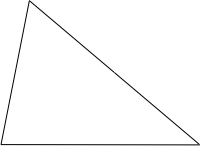
serves to represent the co-exact properties of this type. Suppose further that the first step of a proof’s construction is to drop the perpendicular from a vertex of the triangle to the line containing the side opposite the vertex. Then the result of carrying this step out on the diagram
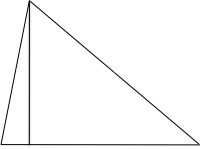
ceases to be representative. That the perpendicular falls within the triangle in the diagram is a co-exact feature of it. But there are triangles with exact properties different from the initial diagram where applying the construction step results in a perpendicular lying outside the triangle. For example, with the triangle
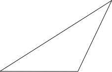
the result of applying the construction step is
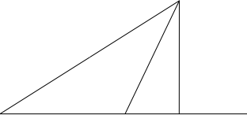
4.3 The formal systems FG and Eu
And so, carrying out a Euclidean construction on a representative diagram can result in an unrepresentative diagram. A central task of formalizing Euclid’s diagrammatic proofs is accounting for this—i.e., providing with its rules a method for distinguishing general co-exact features from non-general ones in diagrammatic representations of constructions. The systems FG and Eu take two different approaches to this task.
Employing the method of FG, one must produce with a diagram every case that could result from the construction. A general co-exact relation of the construction is then one that appears in every case. FG’s demand that every case be produced would, of course, be of a little interest if it did not also provide a method for producing them all. The method FG provides depends on the fact that lines and circles in the system’s diagrams are defined in purely topological terms. Their resulting flexibility makes it possible to formulate and implement in a computer program a general method for generating cases.[9]
The lines and circles of Eu diagrams are not similarly flexible. Accordingly, it cannot resolve the generality problem via case-analysis as FG does. The central idea of its approach is to allow diagrams to hold partial information from the outset. Within an Eu derivation, the diagram produced by a proof’s construction has an initial content consisting in all the qualitative relations of the proof’s initial diagram. The qualitative relations concerning objects added by the construction cannot be read off the diagram immediately. Those that can be read off the diagram must be derived by the system’s rules.[10]
The differences between the FG and Eu approaches to formalizing Euclid’s constructions can be understood as representing different general conceptions of the role of diagrams in mathematics. FG embodies a conception where diagrams concretely realize a range of mathematical possibilities. They support mathematical inference by furnishing direct access to these possibilities. Eu in contrast embodies a conception where diagrams serve to represent in a single symbol the various components of a complex mathematical situation. They support mathematical inference by allowing the mathematical reasoner to consider all these components in one place, and to focus on those components relevant to a proof.
5. Diagrams and Cognition, Applications
Despite the formal limitations of some diagrammatic systems noted above, many different systems are currently used in a wide variety of contexts; logic teaching, automated reasoning, specifying computer programs, reasoning about situations in physics, graphical user interfaces to computer programs, and so on. In general, it is not yet known how effective (in the above sense) many of these diagrammatic systems are. We now give a brief survey of other diagrammatic systems and their uses, as well as the more philosophical issues raised by the debate over the status of diagrammatic reasoning.
5.1 Some other Diagrammatic Systems
It is worth noting that many mathematicians and philosophers proposed diagrammatic systems, often with a didactic motivation. Some systems, like Lewis Carroll’s in “The Game of Logic” (1896) are variants on the proposals of Euler and Venn. Others, like Frege (1879), used lines rather than plane regions. (For a description of Frege’s notation, see the section on Complex Statements and Generality in the entry on Gottlob Frege. See also Englebretsen 1992.) Carroll’s system supersedes Venn’s in that the complements of sets are explicitly represented as regions of the diagram, rather than being left as the background region against which the circles appear. This means that Carroll’s system is able to draw inferences about relations between complements of properties, at the expense of representing some properties as disjoint (i.e., non-connected) regions. This shift closely mirrors the shift in logic from subject-predicate argumentation to a function-argument representation (Stenning 1999).
Peirce, a founder of modern quantified logic, also invented a graphical system, called Existential Graphs, which is logically equivalent to predicate logic. Along with Don Robert’s pioneering work on Existential Graphs and John Sowa’s creative application of Peirce’s graphs, recently a group of diagrammatic researchers provided more diverse approaches to Existential Graphs in a broader theoretical context (Shin 2003).
On a more practical theme, AI researchers, one of whose main concerns is the heuristic power of representation systems in addition to their expressive power, have been debating about different forms of representation for decades (Sloman 1971, 1985, 1995). Hence, they have welcomed discussions of the distinct role of visual reasoning and have recently hosted interdisciplinary symposiums on diagrammatic reasoning at AI conferences.[11] At the same time, realizing that human beings adopt different representation forms depending on the kinds of problems they face, some AI researchers and design theorists have practiced domain-specific approaches to bringing in problem-tailored representation forms.[12]
For instance, Harel (1988) invented higraphs to represent system specifications in computer science. This idea has been taken up in industrial applications (e.g., UML, in Booch et al. 1998). Barker-Plummer & Bailin (1997) present a case study in developing computers which can carry out the kind of analogical reasoning that humans perform when proving certain mathematical theorems. More recently, an interesting result has been presented by Mateja Jamnik of Alan Bundy’s Mathematical Reasoning Group at Edinburgh (Jamnik 2001). Jamnik shows how a semi-automatic formal proof system can perform some of the perceptual inferences which humans find so natural. For instance, that the sum of the first n odd natural numbers is n squared is easily seen by decomposing an n × n grid into “ells” (Jamnik et al. 1999).
Scholars at the University of Brighton has been carrying out interesting projects both in developing diagrammatic systems and in applying visual tools in software development, see the link in the Other Internet Resources section.
It should also be mentioned that scientists such as chemists and physicists also use diagrams in order to perform certain computations. Feynman diagrams, for example, are used to perform calculations in sub-atomic physics. More recently, formal diagrammatic reasoning has been developed for quantum theory (Coecke & Kissinger 2017). In Knot Theory (which has applications in physics, Kauffman 1991) the three Reidemeister Moves are diagrammatic operations which make up a complete calculus for proving knots equivalent. Not surprisingly, Knot diagrams have attracted interest from researchers (De Toffoli & Giardino 2014). The crucial role of diagrams and diagrammatic reasoning in the abstract mathematics of category theory has also been investigated (Halimi 2012; De Toffoli 2017).
5.2 Diagrams as Mental Representations
Do our mental representations have diagram-like or picture-like entities as components? This question has a long history both in philosophy and in psychology, independently of each other. More recently, however, some philosophers have participated in this “imagery debate”, one of the most time-honored controversies in psychology, and some cognitive psychologists find certain epistemological theories in philosophy useful to support their views on the issue.
The nature of mental representation has been one of the perennial topics in philosophy, and we can easily trace back philosophical discussions on images and mental representation to ancient times.[13] The writings of Hobbes, Locke, Berkeley, and Hume concern themselves in large part with mental discourse, the meaning of words, mental images, particular ideas, abstract ideas, impressions, and so on. Descartes’ well-known distinction between imagining and conceiving something has generated much discussion about the unique role of visual images in mental representations. The development of cognitive science in the 20th century naturally has brought certain group of philosophers and psychologists closer and we find a number of authors whose works easily belong to both disciplines (Block 1983; Dennett 1981; Fodor 1981).
Imagery based on introspection was the main focus in the early development of psychology until the behavioristic approach became predominant in the discipline. During the era of behaviorism, anything related to mental inspection, including images, was excluded from any serious research agenda. Finally when the topic of mental images made a comeback in psychology in 1960s, researchers adopted a more humble agenda for mental imagery than before: Not all mental representations involve imagery, and imagery is one of many ways of manipulating information in the mind. Also, thanks to the influence of behaviorism, it is acknowledged that introspection is not enough to explore imagery, but a claim about mental imagery needs to be confirmable by experiments in order to show that we successfully externalize mental events. That is, if what a certain mental introspection tells us is genuine, then there would be observable external consequences of that mental state.
Thus the contemporary imagery debate among cognitive scientists is about the claim that picture-like images exist as mental representations and about how we interpret certain experiments.[14]
Kosslyn (1980, 1994) and other pictorialists (Shepard & Metzler 1971) present experimental data to support their position that some of our mental images are more like pictures than a linear form of language (for example, natural languages or artificial symbolic languages) in some important aspects, even though not all visual mental images and pictures are of exactly the same kind. By contrast, Pylyshyn (1981) and other descriptionalists (Dennett 1981) raise questions about the picture-like status of mental images and argue that mental images are formed out of structured descriptions. To them, mental images represent in the manner of language rather than pictures and, hence, there are no picture-like visual mental images.
Both sides of the debate sometimes used a philosophical theory as a supporting factor. For example, pictorialists in the imagery debate found the modern sense-datum theory in philosophy quite close to their point of view. By the same token, the critics of the sense-datum theory argued that the mistaken pictorial view of mental images arises mainly from our confusion about ordinary language and claimed that mental images are epiphenomena.
5.3 The Cognitive Role of Diagrams
Without being heavily involved in the imagery debate, some researchers have focused on a distinct role that diagrams or pictures—as opposed to traditional sentential forms—play in our cognitive activities. (Shin 2015; Hamami & J. Mumma 2013) Based on the conjectures that humans adopt diagrammatic or spatial internal mental representations in their reasoning about concrete or abstract situations (see Howell 1976; Sober 1976), some cognitive scientists have concentrated on the functions of images or diagrams in our various cognitive activities, for example, memory, imagination, perception, navigation, inference, problem-solving, and so on. Here, the distinct nature of “visual information,” which is obtained either through internal mental images or through externally drawn diagrams, has become a major topic of research. Even though most of these works assume that there are mental images (that is, they accept the pictorialists’ claim), strictly speaking they do not have to commit themselves to the view that these images exist as basic units in our cognition. Descriptionalists do not have to discard discussions of the functions of images, but only need to add that these images are not primitive units stored in our memory, but formed out of structured descriptions more like the sentences of a language (see Pylyshyn 1981).
A search for the distinct role of diagrams has led researchers to explore the differences among different forms of external or internal representations, and mainly between diagrammatic and sentential representations. Many important results have been produced in cognitive science. Starting from Larkin and Simon’s classic case study (1987) to illustrate a difference between informational and computational equivalence among representation systems, Lindsay’s work locates where this computational difference lies, which he calls a ‘non-deductive’ method. As briefly pointed out above, this inference process is called ‘free ride’ by Barwise and Shimojiima (1995), i.e., the kind of an inference in which the conclusion seems to be read off automatically from the representation of premises. In Gurr, Lee, and Stenning (1998) and Stenning and Lemon (2001), there is an explanation of the uniqueness of diagrammatic inference in terms of a degree of ‘directness’ of interpretation, and it is argued that this property is relative, and hence that “some rides are cheaper than others”. Having the role of graphs in mind, Wang and Lee (1993) present a formal framework as a guideline for correct visual languages. At this point, we are very close to applied aspects of research in multi-modal reasoning—design theory and AI research—by providing these disciplines with computational support for visual reasoning.
Related to the issue of imagistic mental representation is the examination of the semantics of various diagrammatic systems and what they can teach us about the nature of languages in general (e.g., Goodman 1968). For instance, Robert Cummins (1996), amongst others, argues that too little attention has been given to diagrammatic representations and that focus on a notion of “structural representation” more akin to diagrammatic representation can help to explicate the nature of representation itself. We believe that the considerations presented above give us some empirical handle on this type of claim at least—depending on the imagistic objects and relations used, patterns of incorrect inference should be predictable and detectable. An important, if little-known, article on this theme is Malinas 1991. Here Malinas explores the concepts of pictorial representation and “truth in” a picture via the notion of resemblance, and considers various semantic puzzles about pictorial representation. He develops Peacocke’s “Central Thesis” of depiction (Peacocke 1987), where experienced similarities between properties of pictorial objects and their referents in the visual field give rise to the relation of depiction. He goes on to provide a formal semantics for pictures which is “analogous to a semantics for an ideal language”.
Summary
We began by motivating the philosophical interest of diagrams, by way of their role in human reasoning and their relation to the study of language in general, and multi-modal information processing. We then explained the trade-off between expressive power and visual clarity of diagrammatic systems, by examining the historical development of diagram systems from Euler and Venn, through Peirce’s work, to recent work by Shin and Hammer. It was argued that diagrammatic systems can be afforded the same logical status as traditional linear proof calculi. We then explained some of the potential pitfalls of diagrammatic representation and reasoning, by examining spatial constraints on diagrammatic systems and how they can affect correctness and expressive power. We closed by surveying other diagrams systems, the interest in diagrams generated in computer science and cognitive science, and gave an introduction to the imagery debate in the philosophy of mind.
Bibliography
References
- Allwein, G. and J. Barwise (eds.), 1996, Logical Reasoning with Diagrams, Oxford: Oxford University Press.
- Avigad, J. with E. Dean and J. Mumma, 2009, “A formal system for Euclid’s Elements”, Review of Symbolic Logic, 2: 700–768.
- Barker-Plummer, D. and S. Bailin, 1997, “The Role of Diagrams in Mathematical Proofs”, Machine GRAPHICS and VISION, 6(1): 25–56. (Special Issue on Diagrammatic Representation and Reasoning).
- Barker-Plummer, D., D. Beaver, J. van Benthem, and P. Scotto di Luzio, 2002, Words, Proofs, and Diagrams, Stanford: CSLI Publications.
- Barwise, J., 1993, “Heterogeneous reasoning”, in G. Mineau, B. Moulin, and J. Sowa, (eds), ICCS 1993: Conceptual Graphs for Knowledge Representation (Lecture Notes in Artificial Intelligence: Volume 699), Berlin: Springer Verlag, pp. 64–74.
- Barwise, J. and J. Etchemendy, 1989, “Information, Infons, and Inference”, in Cooper, Mukai, and Perry, (eds), Situation Theory and its Applications, volume 1, Stanford: CSLI Publications.
- –––, 1991, “Visual Information and Valid Reasoning”, in Zimmerman and Cunningham, (eds), Visualization in Teaching and Learning Mathematics, pages 9–24. Washington: Mathematical Association of America.
- –––, 1993, The Language of First-Order Logic, Stanford: CSLI Publications.
- –––, 1994, Hyperproof, Stanford: CSLI Publications.
- –––, 1995, “Heterogeneous Logic”, in J. Glasgow, N. Hari Narayanan, and B. Chandrasekaran, (eds), Diagrammatic Reasoning: Cognitive and Computational Perspectives, pages 209–232. Cambridge, MA: AAAI Press/The MIT Press.
- Barwise, J. and A. Shimojima, 1995, “Surrogate Reasoning”, Cognitive Studies: Bulletin of Japanese Cognitive Science Society, 4(2): 7–27.
- Berkeley, G., 1710, Principles of human knowledge, in David Armstrong (ed.), Berkeley’s Philosophical Writings, London: Macmillian, 1965.
- Block, N., (ed.), 1981, Imagery, Cambridge, MA: MIT Press.
- –––, 1983, “Mental pictures and cognitive science”, The Philosophical Review, 92: 499–541
- Booch, G., J. Rumbaugh, and I. Jacobson, 1999, The Unified Modeling Language Reference Manual, Reading, Mass.: Addison-Wesley.
- Coecke, B. and Kissinger, A., 2017, Picturing Quantum Processes. A First Course in Quantum Theory and Diagrammatic Reasoning, Cambridge: Cambridge University Press.
- Carroll, L., 1896, Symbolic Logic, New York: Dover.
- Chandrasekaran, B., J. Glasgow, and N. Hari Narayanan, (eds.), 1995, Diagrammatic Reasoning: Cognitive and Computational Perspectives, Cambridge, MA: AAAI Press/The MIT Press.
- Cummins, R., 1996, Representations, Targets, and Attitudes, Cambridge, MA: MIT Press.
- De Toffoli, S., 2017, “Chasing The Diagram – The Use of Visualizations in Algebraic Reasoning”, Review of Symbolic Logic, 10 (1): 158–186.
- De Toffoli, S. and Giardino, V., 2014, “Forms and Roles of Diagrams in Knot Theory”, Erkenntnis, 79 (4): 829–842.
- Dennett, D., 1981, “The nature of images and the introspective trap”, in Block 1981, pp. 87–107.
- Englebretsen, G., 1992, “Linear Diagrams for Syllogisms (with Relationals)”, Notre Dame Journal of Formal Logic, 33(1): 37–69.
- Euclid, The Thirteen Books of the Elements (second edition, Vols. I–III), New York, NY: Dover Publications, 1956. Translated with introduction and commentary by Sir Thomas L. Heath, from the text of Heiberg.
- Euler, L., 1768, Lettres à une Princesse d’Allemagne, St. Petersburg; l’Academie Imperiale des Sciences.
- Fodor, J., 1981, “Imagistic representation”, in Block 1981, pp. 63–86.
- Frege, G., 1879, Begriffsschrift: eine der arithmetischen nachgebildete Formelsprache des reinen Denkens, Halle am See: Louis Nebert
- Friedman, M., 2012, “Kant on geometry and spatial intuition”, Synthese, 186: 231–255.
- Gardner, M., 1958, Logic Machines and Diagrams, Sussex: Harvester Press.
- Goodman, N., 1968, Languages of Art: an approach to a theory of symbols, London: Oxford University Press.
- Greaves, M., 2002, The Philosophical Status of Diagrams, Stanford: CSLI Publications.
- Grigni, M., D. Papadias, and C. Papadimitriou, 1995, “Topological Inference”, in International Joint Conference on Artificial Intelligence (IJCAI ‘95), pages 901–907, Cambridge, MA: AAAI Press.
- Gurr, C., J. Lee, and K. Stenning, 1998, “Theories of diagrammatic reasoning: Distinguishing component problems”, Minds and Machines, 8: 533–557.
- Halimi, B., 2012, “Diagrams as Sketches”, Synthese, 186(1): 387–409.
- Hamami Y. and Mumma J., 2013, “A Prolegomena to a Cognitive Investigation of Euclidean Diagrammatic Reasoning”, Journal of Language, Logic and Information, 22 (4): 421–448.
- Hammer, E., 1995a, “Reasoning with Sentences and Diagrams”, Notre Dame Journal of Formal Logic, 35(1): 73–87.
- Hammer, E. and S. Shin, 1998, “Euler’s Visual Logic”, History and Philosophy of Logic, 19: 1–29.
- Harel, D., 1988, “On Visual Formalisms”, Communications of the ACM, 31(5): 514–530.
- Howell, R., 1976, “Ordinary Pictures, Mental Representations, and Logical Forms”, Synthese, 33: 149–174.
- Jamnik, M., 2001, Mathematical Reasoning with Diagrams, Stanford: CSLI Publications.
- Jamnik, M., A. Bundy, and I. Green, 1999, “On Automating Diagrammatic Proofs of Arithmentic Arguments”, Journal of Logic, Language, and Information, 8(3): 297–321.
- Kant, I., 1781, Critique of Pure Reason, translated and edited by P. Guyer and A. Wood, Cambridge: Cambridge University Press, 1998.
- Kauffman, L. 1991, Knots and Physics, Singapore: World Scientific.
- Kosslyn, S., 1980, Image and Mind, Cambridge, MA: Harvard University Press.
- –––, 1994, Image and Brain: the resolution of the imagery debate, Cambridge, MA: MIT Press.
- Lambert, J. H., 1764, Neues Organon, Berlin: Akademie Verlag, 1990.
- Larkin, J. and H. Simon, 1987, “Why a Diagram is (Sometimes) Worth 10,000 Words”, Cognitive Science, 11: 65–99.
- Leibniz, G., 1704, New Essays Concerning Human Understanding, LaSalle: Open Court Publishing, 1949.
- Lemon, O., 2002, “Comparing the Efficacy of Visual Languages”, in Barker-Plummer et al. (eds.), 2002, pp. 47–69.
- Lemon, O., M. de Rijke, and A. Shimojima, 1999, “Efficacy of Diagrammatic Reasoning” (Editorial), Journal of Logic, Language, and Information, 8(3): 265–271.
- Lemon, O. and I. Pratt, 1997, “Spatial Logic and the Complexity of Diagrammatic Reasoning,” Machine Graphics and Vision, 6(1): 89–108, 1997. (Special Issue on Diagrammatic Representation and Reasoning).
- –––, 1998, “On the insufficiency of linear diagrams for syllogisms”, Notre Dame Journal of Formal Logic, 39(4): 573–580.
- Malinas, G., 1991, “A Semantics for Pictures”, Canadian Journal of Philosophy, 21(3): 275–298.
- Manders, K., 2008 [1995], “The Euclidean diagram”, in Philosophy of Mathematical Practice, P. Mancosu (ed.), Oxford: Clarendon Press, 2008, pp. 112–183. (First circulated as a manuscript in 1995.)
- Miller, Nathaniel, 2007, Euclid and His Twentieth Century Rivals: Diagrams in the Logic of Euclidean Geometry, (CSLI Studies in the Theory and Applications of Diagrams), Stanford: CSLI Publications.
- –––, 2006, “Computational complexity of diagram satisfaction in Euclidean geometry”, Journal of Complexity, 22: 250–74.
- Morrow, G., 1970, Proclus: A commentary on the first book of Euclid’s Elements, Princeton: Princeton University Press, 1970.
- Mumma, J., 2010, “Proofs, Pictures and Euclid”, Synthese, 175(2): 255–287.
- Narayanan, N., 1993, “Taking issue/forum: The imagery debate revisited”, Computational Intelligence, 9(4): 303–435.
- Pasch, M., 1882, Vorlesungen über neuere Geometrie, Teubner: Leipzig.
- Peacocke, C., 1987, “Depiction”, The Philosophical Review, 96: 383–410
- Peirce, C.S., 1933, Collected Papers, Cambridge, MA: Harvard University Press.
- Pylyshyn, Z., 1981, “Imagery and Artificial Intelligence”, in N. Block, (ed.), Readings in Philosophy of Psychology, volume 2, pages 170 –196. Cambridge, MA: Harvard University Press.
- Roberts, D., 1973, The Existential Graphs of Charles S. Peirce, The Hague: Mouton.
- Russell, B., 1923, “Vagueness”, in J. Slater, (ed.), Essays on Language, Mind, and Matter: 1919–26 (The Collected Papers of Bertrand Russell), pages 145–154. London: Unwin Hyman.
- Schlimm, D., 2010, “Pasch’s philosophy of mathematics”, Review of Symbolic Logic, 3(1): 93–118.
- Shabel, L., 2003, Mathematics in Kant’s Critical Philosophy: Reflections on Mathematical Practice, New York: Routledge.
- Shepard, R. and J. Metzler, 1971, “Mental rotation of three-dimensional objects”, Science, (171): 701–3.
- Shimojima, A., 1996a, On the Efficacy of Representation, Ph.D. thesis, Indiana University.
- –––, 1999, “Constraint-Preserving Representations”, in L. Moss, J. Ginzburg, and M. de Rijke, (eds), Logic, Language and Computation: Volume 2, CSLI Lecture Notes #96, pages 296–317. Stanford: CSLI Publications.
- Shin, S., 1994, The Logical Status of Diagrams, Cambridge: Cambridge University Press.
- –––, 2003, The Iconic Logic of Peirce’s Graphs, Cambridge: MIT Press (Bradford).
- –––, 2015, “The Mystery of Deduction and Diagrammatic Aspects of Representation”, Review of Philosophy and Psychology: Pictorial and Spatial Representation, 6: 49–67.
- Sloman, A., 1971, “Interaction between philosophy and AI: The role of intuition and non-logical reasoning in intelligence”, in Proceedings Second International Joint Conference on Artificial Intelligence, Los Altos, Calif.: Morgan Kaufmann.
- –––, 1985, “Why we need many knowledge representation formalisms”, in M. Bramer, (ed.), Research and Development in Expert Systems, pages 163–183.
- –––, 1995, “Musings on the roles of logical and nonlogical representations in intelligence”, in Chandrasekaran et al., 1995, pp. 7–32.
- Sober, E., 1976, “Mental Representations”, Synthese, 33: 101–148
- Sowa, J., 1984, Conceptual Structures: Information Processing in Mind and Machine, London: Addison Wesley.
- Stenning, K., 1999, “Review of Das Spiel der Logik, by Lewis Carrol”, Journal of Symbolic Logic, 64: 1368–1370.
- Stenning, K. and O. Lemon, 2001, “Aligning Logical and Psychological Perspectives on Diagrammatic Reasoning”, Artificial Intelligence Review, 15(1–2): 29–62. (Reprinted in Thinking with Diagrams, Kluwer, 2001.)
- Tye, M., 1991, The Imagery Debate, Cambridge, MA: MIT Press.
- Venn, J., 1881, Symbolic Logic, London: Macmillan.
- Wang, D. and J. Lee, 1993, “Visual Reasoning: its Formal Semantics and Applications”, Journal of Visual Languages and Computing, 4: 327–356.
- Wittgenstein, L., 1921, Tractatus Logico-Philosophicus, B. Pears and B. McGuinness (trans), London: Routledge & Kegan Paul, 1961
- Zeman, J., 1964, The Graphical Logic of C. S. Peirce, Ph.D. thesis, University of Chicago.
Relevant Literature
- Barwise, J. and E. Hammer, 1994, “Diagrams and the Concept of a Logical System”, in Gabbay, D. (ed.), What is a Logical System? New York: Oxford University Press.
- Hammer, E., 1995b, Logic and Visual Information, Studies in Logic, Language, and Computation. Stanford: CSLI Publications and FoLLI.
- –––, 1998, “Semantics for Existential Graphs”, Journal of Philosophical Logic, 27: 489–503
- Hammer, E. and S. Shin, 1996, “Euler and the Role of Visualization in Logic”, in Seligman, J. and Westerståhl, D. (eds), Logic, Language and Computation: Volume 1, CSLI Lecture Notes #58, pages 271–286. Stanford: CSLI Publications.
- Kneale, W., and Kneale, M., 1962, The Development of Logic, Oxford: Clarendon Press.
- Lemon, O., 1997, “Review of Logic and Visual Information, by E. M. Hammer”, Journal of Logic, Language, and Information, 6(2): 213–216.
- Roberts, D., 1992, “The Existential Graphs of Charles S. Peirce”, Computer and Math. Applic., (23): 639–663.
- Shimojima, A., 1996b, “Operational constraints in diagrammatic reasoning”, in J. Barwise and G. Allwein, (eds), Logical Reasoning with Diagrams, New York: Oxford University Press, pages 27–48.
- –––, 1996c, “Reasoning with Diagrams and Geometrical Constraints”, in Seligman, J. and Westerståhl, D. (eds), Logic, Language and Computation: Volume 1, CSLI Lecture Notes #58, pages 527–540. Stanford, CSLI Publications.
- Shin, S., 1991, “A Situation-Theoretic Account of Valid Reasoning with Venn Diagrams”, in J. Barwise, J. Gawron, G. Plotkin, and S. Tutiya, (eds), Situation Theory and its Applications: Volume 2, CSLI Lecture Notes #26, pages 581–605. Stanford: CSLI Publications.
- –––, 1999, “Reconstituting Beta Graphs into an Efficacious System”, Journal of Logic, Language, and Information, 8: 273–295.
- –––, 2000, “Reviving the Iconicity of Beta Graphs”, in Anderson, Cheng, and Haarslev, (eds), Theory and Application of Diagrams, pages 58–73. Springer-Verlag.
- –––, 2002a, The Iconic Logic of Peirce’s Graphs, Cambridge, MA: MIT Press.
- –––, 2002b, “Multiple Readings of Peirce’s Alpha Graphs”, in M. Anderson, B. Meyer, and P. Olivier, (eds), Diagrammatic Representation and Reasoning, London: Springer-Verlag, pp. 297–314.
- Sowa, J., 2000, Knowledge Representation: Logical, Philosophical, Computational Foundations, Belmont, CA: Brooks/Cole.
- Stenning, K., 2002, Seeing Reason: image and language in learning to think, Oxford: Oxford University Press.
- Stenning, K. and J. Oberlander, 1995, “A Cognitive Theory of Graphical and Linguistic Reasoning: Logic and Implementation”, Cognitive Science, 19(1): 97–140.
- Tufte, E., 1983, The Visual Display of Quantitative Information, Connecticut: Graphics Press.
- –––, 1990, Envisioning Information, Connecticut: Graphics Press.
Academic Tools
How to cite this entry. Preview the PDF version of this entry at the Friends of the SEP Society. Look up topics and thinkers related to this entry at the Internet Philosophy Ontology Project (InPhO). Enhanced bibliography for this entry at PhilPapers, with links to its database.


Other Internet Resources
- Existential Graphs (Peirce’s MS 514 with commentary by John Sowa).
- Edward Tufte’s Visual Display.
- A Survey of Venn Diagrams (University of Victoria, Frank Ruskey).
- Researchers on Diagrammatic Reasoning, output of search at Google Scholar.
- Diagrams 2018, International conference on the theory and application of diagrams.